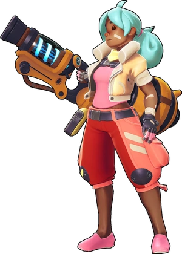
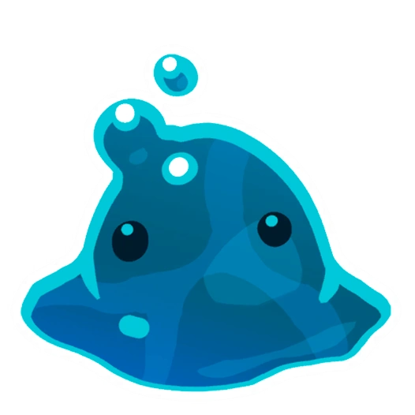
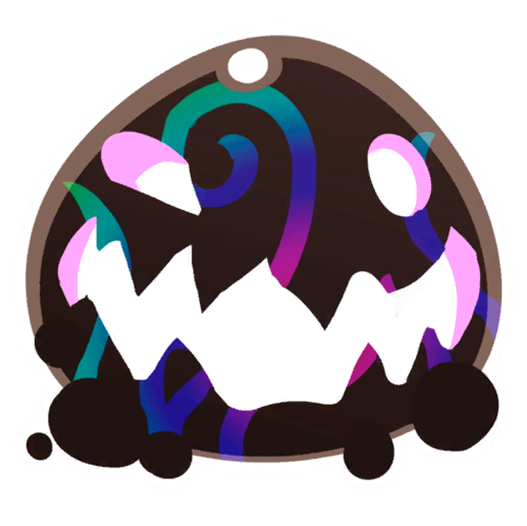
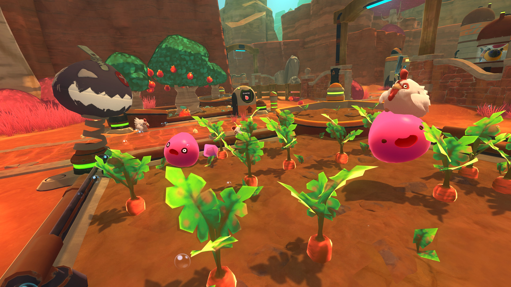

Breatix Lebeau
Es una ranchera de lodo que viaja a un planeta lejano para criar y recolectar diferentes tipos de slimes. Ayudala en su objetivo de crear su propio rancho, Beatrix aprendera a manejar y cuidar a los diferentes tipos de slimes que habitan en el mundo extraño y peligroso en el que se encuentra. A medida que explora el mundo y descubre sus secretos, Beatrix se involucrara en una trama principal que le lleva a descubrir la verdadera naturaleza del planeta y su historia.
Mira el trailer aqui!
Slimes
Son seres gelatinosos, adorables y coloridos que habitan en el planeta lejano Cada tipo de slime tiene una apariencia y comportamiento únicos, así como diferentes necesidades y preferencias alimentarias. recolecta y cria slimes, alimentándolos con frutas y vegetales para que crezcan y se reproduzcan, y luego recolectar sus plorts, una sustancia valiosa que se utiliza como moneda. Algunos slimes también tienen habilidades especiales, como la capacidad de volar o la capacidad de explotar. Pero cuidado!, algunos slimes pueden ser peligrosos y atacar al jugador si se sienten amenazados o si no se manejan adecuadamente.
Slime Rosa

Son el tipo de slime más común en el juego y tienen una apariencia suave y esponjosa. A diferencia de otros tipos de slimes que tienen habilidades especiales, como la capacidad de volar o emitir fuego, los slimes rosas son bastante básicos en sus habilidades y solo pueden saltar y comer, tienen un comportamiento adorable y juguetón
Slime fosforo
Los slimes fosforo tienen una apariencia similar a los otros slimes, pero su cuerpo está cubierto de pequeñas partículas de luz que brillan en la oscuridad y tiene alas. Además emiten luz, requieren ciertas condiciones para sobrevivir, como una alimentación específica y una iluminación adecuada.
Slime charco
Se trata de una variedad de slime que tiene la capacidad de retener y expulsar agua, lo que los hace únicos en comparación con otros tipos de slimes. Estos slimes solo pueden vivir en estanques de agua y necesitan estar en contacto constante con el agua para sobrevivir. Si se alejan del agua, comenzarán a perder agua y eventualmente morirán. producen plorts que son bastante valiosos. Sin embargo, debido a su naturaleza acuática, son un poco más difíciles de cuidar y criar que otros tipos de slimes.
Slime cuantico

Se trata de una variedad de slime que tiene habilidades especiales relacionadas con la física cuántica, lo que los hace únicos y desafiantes de cuidar, los slimes cuánticos tienen la capacidad de teletransportarse a través de pequeñas distancias, lo que les permite escapar de los peligros y moverse rápidamente por el entorno. los slimes cuánticos son extremadamente sensibles a la luz y el ruido. Si están expuestos a demasiada luz o ruido, se asustarán y teletransportarán a otro lugar, lo que puede ser problemático para los jugadores que intentan criarlos.
Slime de oro
Es una variedad extremadamente rara de slime en Slime Rancher que produce plorts dorados, que son los mas valiosos. Los Slimes Dorados tienen un aspecto único, con un cuerpo dorado, sin embargo, son muy difíciles de atrapar y criar, ya que solo aparecen de forma aleatoria y no se pueden mantener en un corral convencional. Los jugadores deben ser rápidos y hábiles para atrapar a un Slime Dorado antes de que desaparezca.
Slime Alquitran
El Slime de Alquitrán es una variante agresiva de slime en Slime Rancher. A diferencia de otros slimes, los Slimes de Alquitrán no son pacíficos y tratarán de atacar al Beatrix si se acerca demasiado. Los Slimes de Alquitrán se alimentan de cualquier cosa, incluyendo otros slimes y objetos del mundo del juego. Cuando un Slime de Alquitrán come algo que no debería, como otro slime o un objeto peligroso, se transformará en un "Slime de Alquitrán Largo". Los Slimes de Alquitrán Largos son más grandes y peligrosos que los Slimes de Alquitrán regulares, y también pueden reproducirse asexualmente.
Granja
Es el lugar donde se cría y cuida a los diferentes tipos de slimes. Es un lugar central donde se construyen corrales y jaulas para mantener a los slimes separados y seguros. Los slimes necesitan un hábitat adecuado y alimentos específicos para crecer y reproducirse, por lo que es necesario recoger recursos y alimentos en el mundo exterior para mantenerlos felices y saludables. Además, la granja también tiene otras instalaciones, como una tienda donde se pueden vender los plorts recolectados a cambio de dinero, areas de de cultivos donde se pueden producir alimentos propios o un dispositivo de teletransporte que permite al jugador viajar a diferentes áreas del mapa. La granja se va expendiendo a medida de que avanza el juego comprarndo sus expansiones con la moneda del juego
